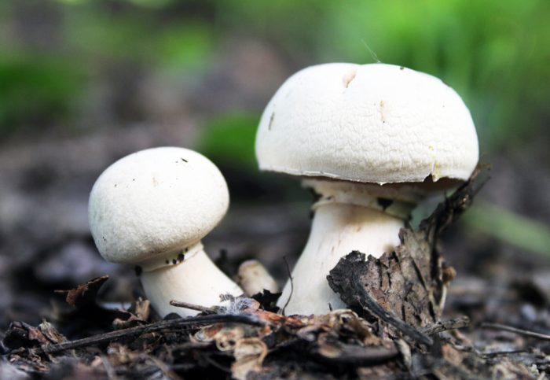
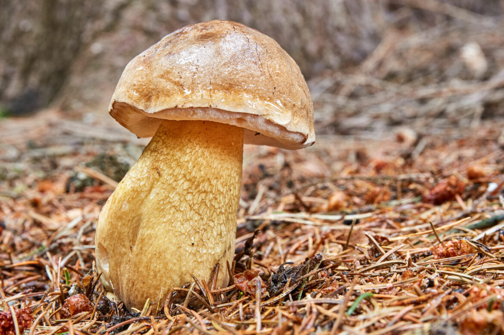
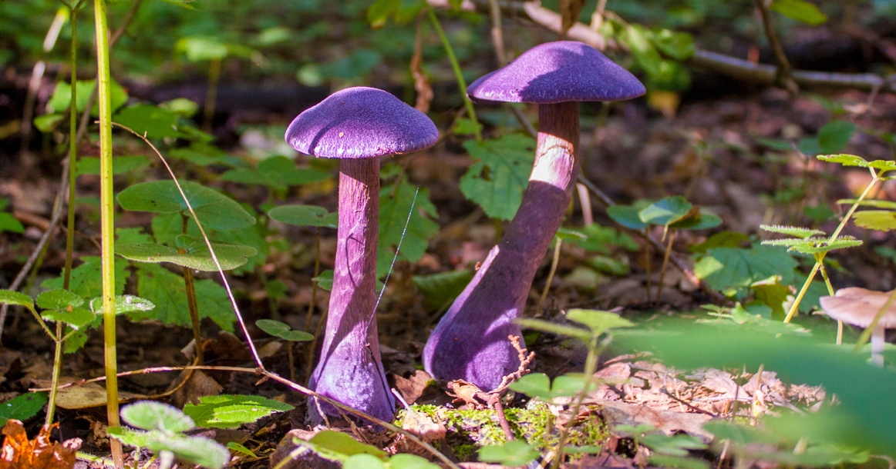

Царство живой природы, объединяющее эукариотические организмы, сочетающие в себе некоторые признаки как растений, так и животных. Грибы изучает наука микология, которая считается разделом ботаники, поскольку ранее грибы относили к царству растений.

Шампиньо́н — род пластинчатых грибов семейства шампиньоновые (агариковые) (лат. Agaricaceae). Русское название «шампиньон» происходит от фр. champignon, восходящего к народнолатинскому (fungus) campaniolus — «полевой (гриб)». Род включает в себя как съедобные, так и несъедобные грибы. К числу культивируемых съедобных относится шампиньон двуспоровый.

Жёлчный гриб — трубчатый гриб рода тилопил семейства болетовые. Из-за горького вкуса несъедобен.

Паутинник фиолетовый (Cortinarius violaceus) относится к семейству паутинниковые (Cortinariaceae). Гриб растет в северной умеренной зоне, на территории России встречается по всей лесной зоне. Его можно найти в хвойных, лиственных и смешанных лесах с развитым напочвенным покровом из зеленых мхов. В Московской области паутинник фиолетовый известен с 1909 года, но встречается редко, чаще всего единичными экземплярами или небольшими группками.